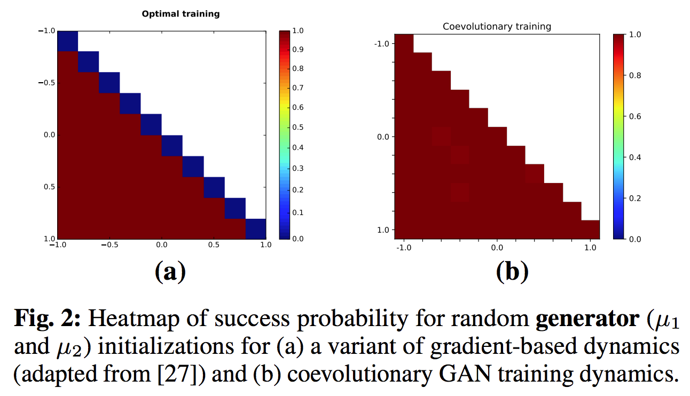
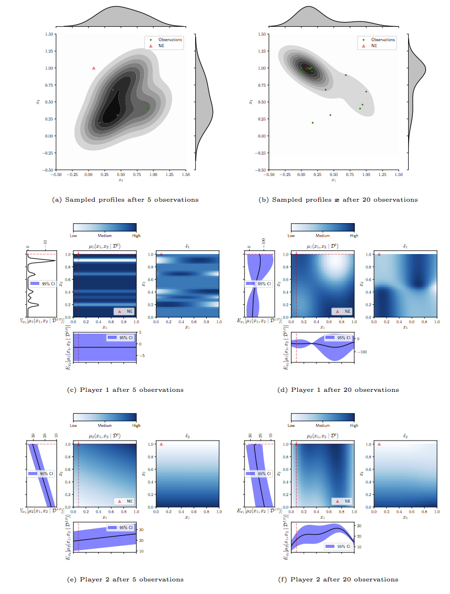
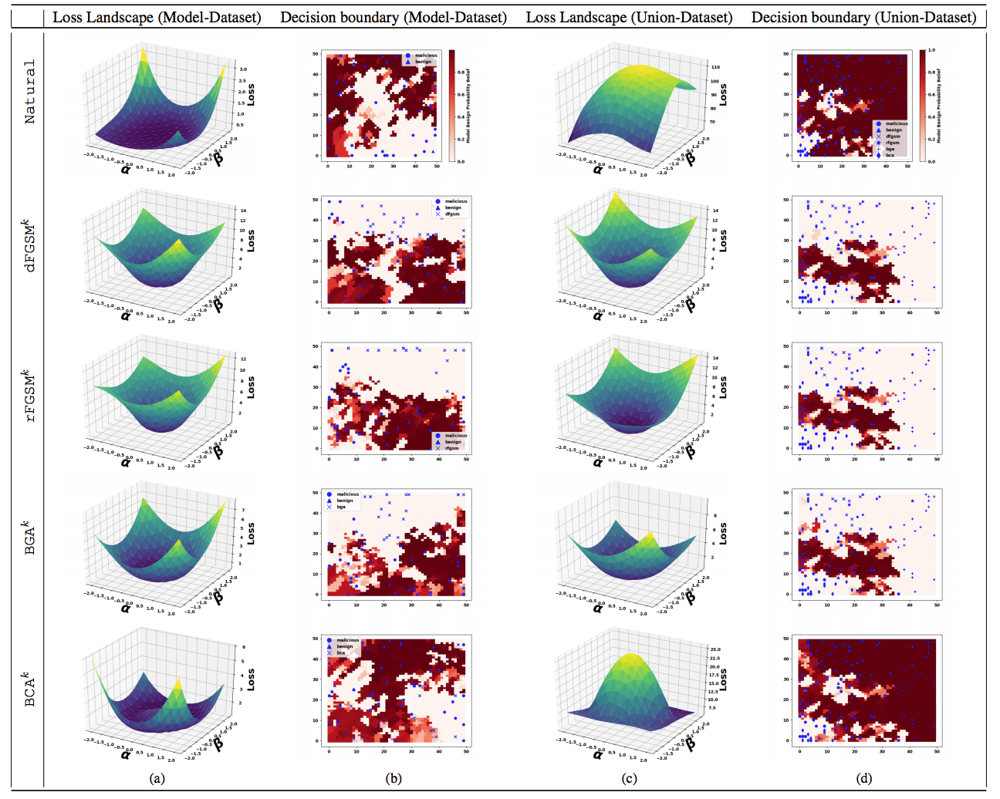
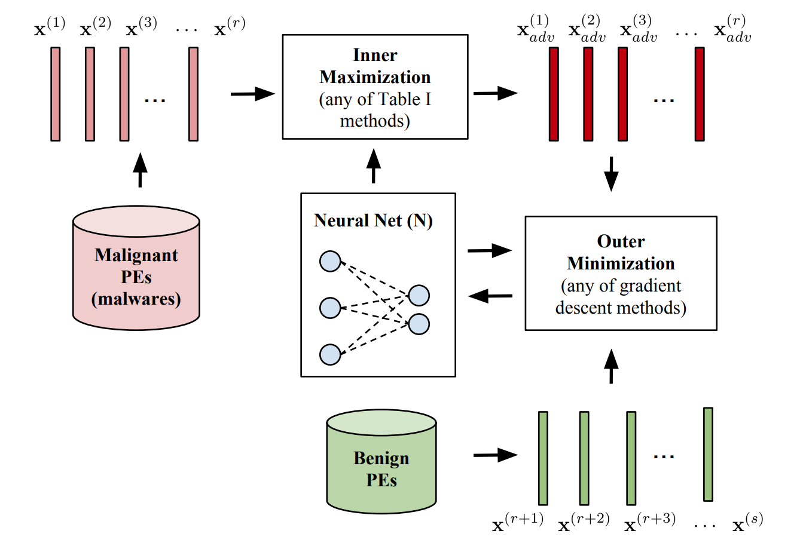
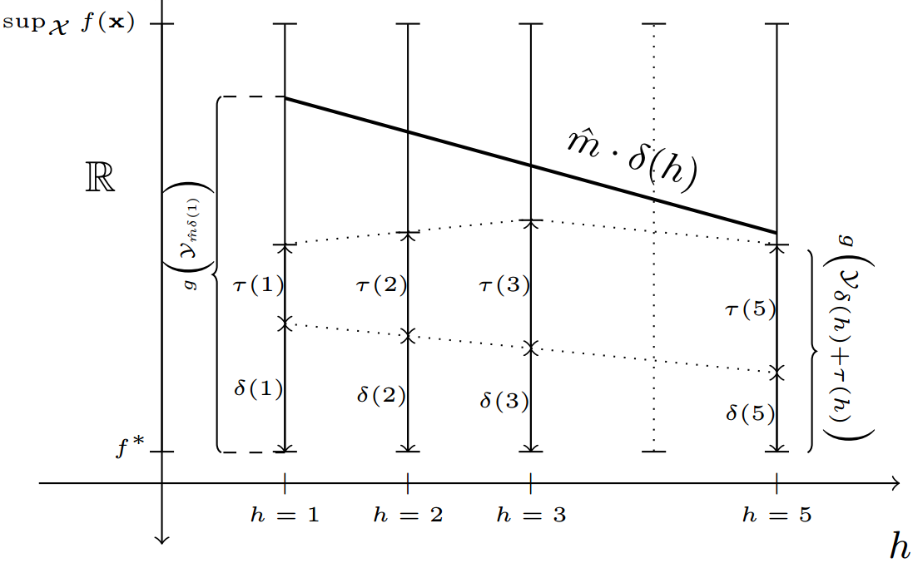
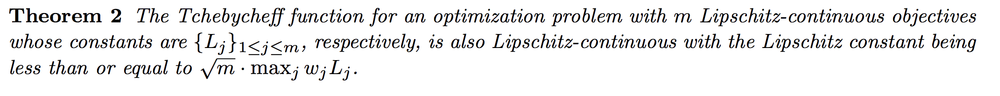
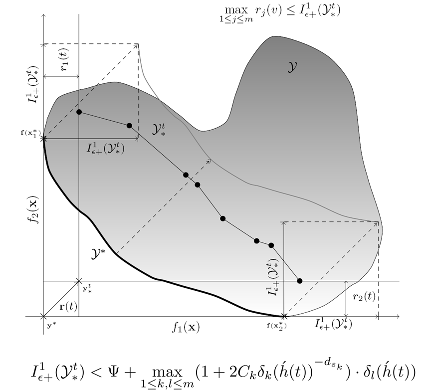
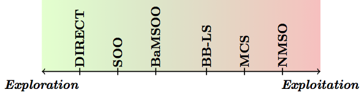
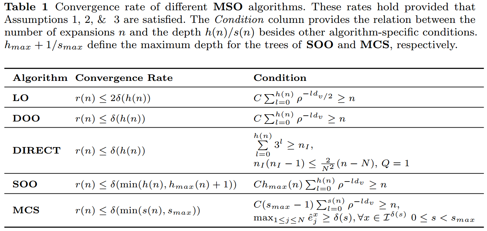

Research
My research is at the interface of optimisation and machine learning. I seek solutions with a theoretically-provable performance.
Highlights
Query-Efficient Black-Box Adversarial Attacks: a framework for crafting adversarial examples based on gradient-sign estimation.
100% evasion rate is achieved on MNIST with just 12 queries!
[code, preprint]
Towards Distributed Cevolutionary GANs: on a theoretical GAN model, spatial coevolution escapes degenerate gradient-based dynamics
[code, AAAI Fall Symposium’18, NeurIPS’18 Workshop on Sys4ML].

Approximating Nash Equilibria for Black-Box Games: A Bayesian Optimization Approach
[code, AAMAS-OPTMAS’18 paper].

SLEIPNIR:
Adversarial Deep Learning for Robust Detection of Binary Encoded Malware
[IEEES&P-DLS’18 paper, IJCAI-IREDLIA’18 paper,training code, visualization code].

EmbeddedHunter: an embedded multi-armed bandits algorithm for large-scale black-box optimization [AAAI’17 paper, code, poster, slides].

Finite-Time Analysis for Lipschitz-Continuous Multi-Objective Problems [JOGO article]

Convergence Analysis for Multi-Objective Optimization: A finite-time bound on the Pareto-compliant additive epsilon indicator down to a problem-dependent measure, namely the conflict dimension [INS paper, demo code].

NMSO: the Naive Multi-scale Search algorithm for expensive black-box optimisation.
It was the second runner-up out of 28 algorithms in the BBComp’15 competition [INS paper, code].

MSO: a theoretical-analysis framework for multi-scale black-box search algorithms [JOGO paper].

Talks:
On Algorithms for Adversarial Dynamics (cancelled talk at Schlumberger-Doll Research Center) [slides].
Ph.D. Defense [slides].
Tutorial on Compiling Occam into Field-Programmable Gate Arrays [slides].